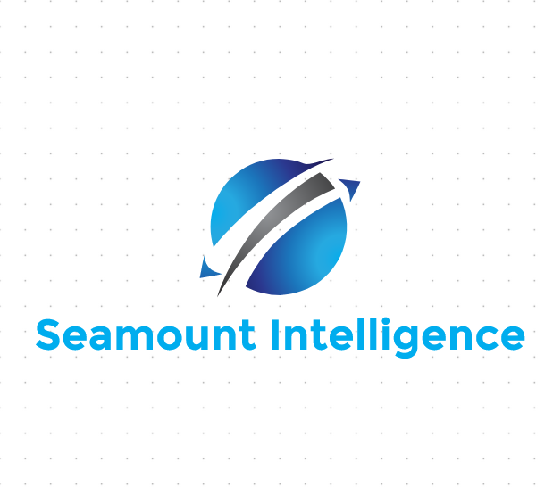

海山情报是一家专业的（商业）学术咨询服务机构。我们依托前沿的科技手段进行深度信息挖掘，通过基于事实的严谨分析，为客户提供精准的关键线索与科学的决策支持。
砥砺前行二十载，海山情报已通过真实可靠的情报支持，助力数千名专家学者与科研政策制定者成功突破工作中的“卡脖子”难题，持续推动研究人员的深度交流与学术圈的繁荣发展。我们的核心服务矩阵涵盖但不限于：
作为一家私营、中立、无党派的咨询机构，海山情报始终坚守独立运营，将保护客户隐私视为生命线，并以此在业内赢得了广泛的尊重和认可。“真实”与“可靠”是我们永恒的核心价值观。我们郑重承诺：海山情报的所有业务均严格遵守中国法律法规，合法合规地为您提供专业服务。
本公司与客户联系的唯一方式是通过电子邮件，当您收到海山情报的信息时，请确认邮件是否由以下email 发出：
其他邮箱发送的邮件均不代表本公司的来函。